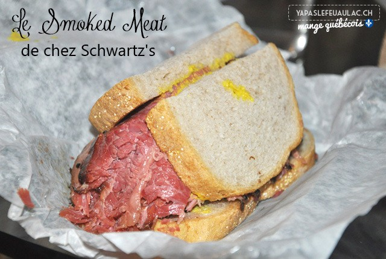

<!DOCTYPE HTML>
<html>
<head>
<title>Le Canada / Les spécialités culinaires</title>
<link rel="stylesheet" href="nnnzo.github.io/style.css" />
</head>
<body>
<FONT face="Verdana">
<ul id="menu-accordeon">
   <li><a href="#">Menu</a>
      <ul>
         <li><a href="index.html">Accueil</a></li>
         <li><a href="carte.html">Carte du Canada </a></li>
         <li><a href="culinaires.html">Les spécialités culinaires </a></li>         
      </ul>
   </li>
</ul>
<center>
    <h1 style="color:white"> Le Smoked meat </h1>
    
	<br>
	<p style="color:white;"><br>Voilà une spécialité typiquement montréalaise, le sandwich à la viande fumée. Ce plat populaire est un
    <br>incontournable lors de votre séjour dans la grande métropole.
    <br>C'est de la viande de boeuf, de la pointe de poitrine de boeuf pour être précis. 
    <br>Ce plat est servi sous la forme dun sandwich composé de pain de seigle et d'une bonne épaisseur de tranches de viande,
    <br>accompagné de frites !
	<p>
	<li style="color:white"> <a href="pdf/sm.pdf" style="color:white">
    Découvrir la recette >> </a> </li>
    <p style="color:white"><em>Photo de Smoked Meat</em></p>
</center>
</FONT><BR>
        <body style="background-color:darkred;">
</body>
</html>
